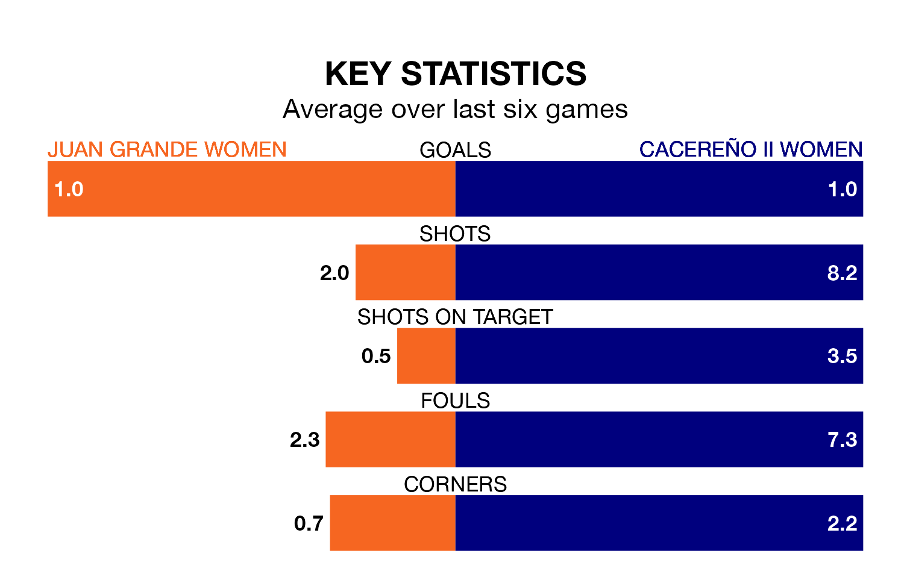

Cacereño II Women travel to Juan Grande Women on early Sunday in the Segunda Federación Femenina.
The visitors come into the game on the back of a draw in their last match, having tied with Fundación Tenerife Women 1-1 at home, with a goal from.
Juan Grande, meanwhile, lost their last match, 1-0 against CD Getafe Women.
Cacereño II are zero in the table after 28 games, of which they have won 10 and drawn five, earning 35 points.
Juan Grande are nine places behind the away team in ninth, with 13 wins and eight draws putting them on 47 points.
With 28 goals in 28 games so far this season, Cacereño II are the league's-10th-lowest scorers with 1.0 goals per game. And they are conceding more than average, letting in 38 goals at a rate of 1.4 per game.
The hosts, meanwhile, are average scorers, with 1.3 goals per game. They have conceded 0.8 goals per game.
Juan Grande are in mixed form in the Segunda Federación Femenina, with two wins and two draws from their last six games.
With two wins and three draws over that period, Cacereño II's form is slightly better – they have taken nine points from 18, compared to Juan Grande's eight.
Updated: 07:59 (UTC), 26/04/24